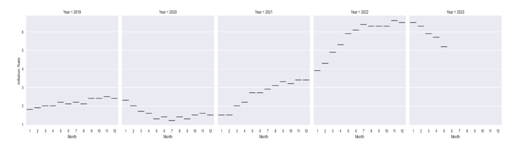
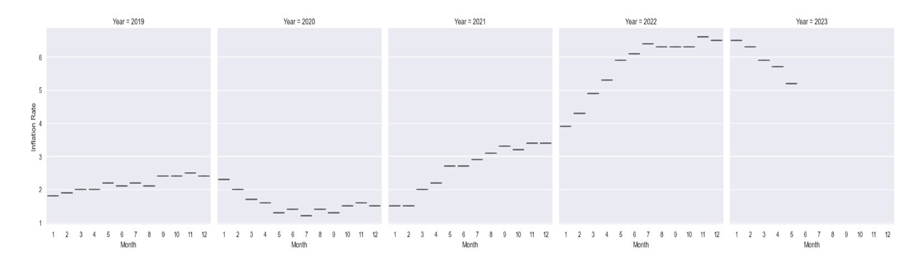
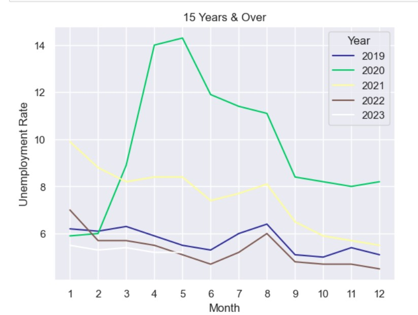
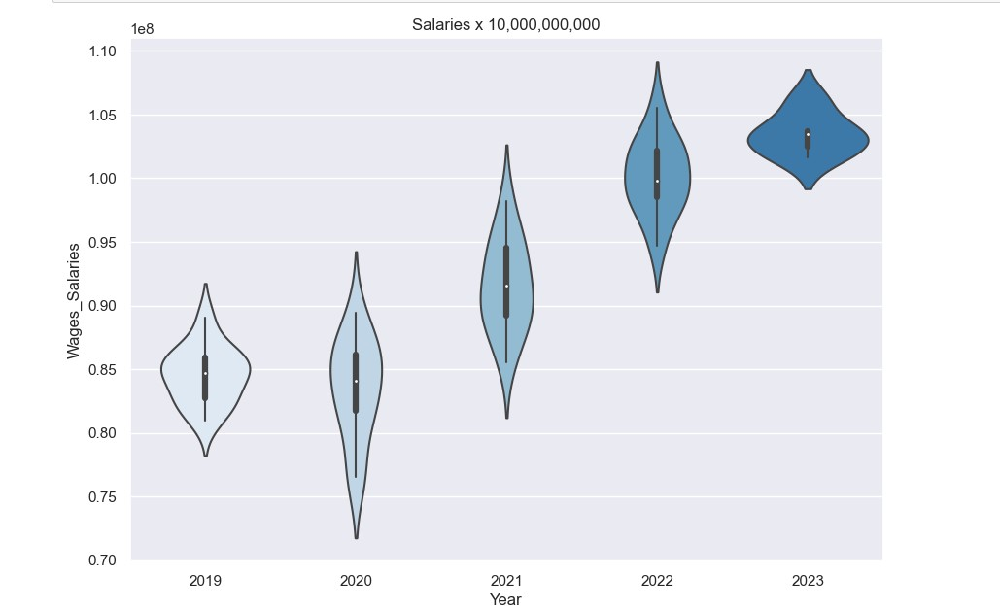
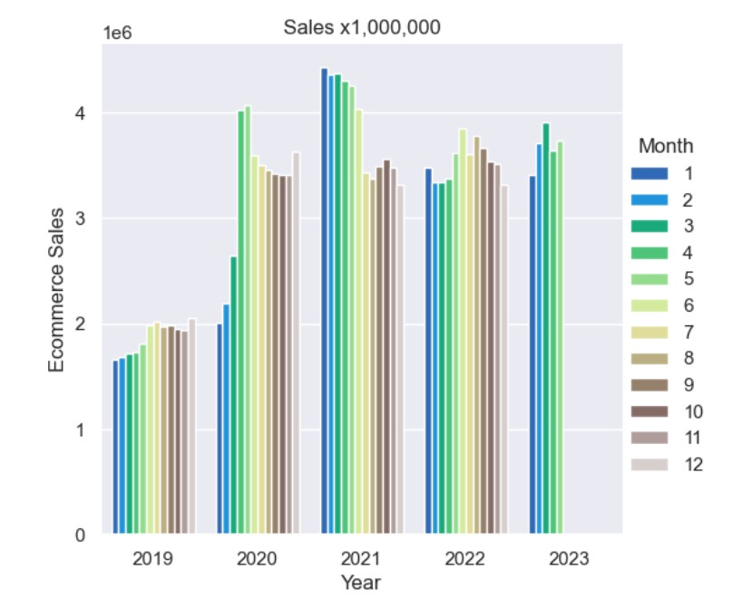
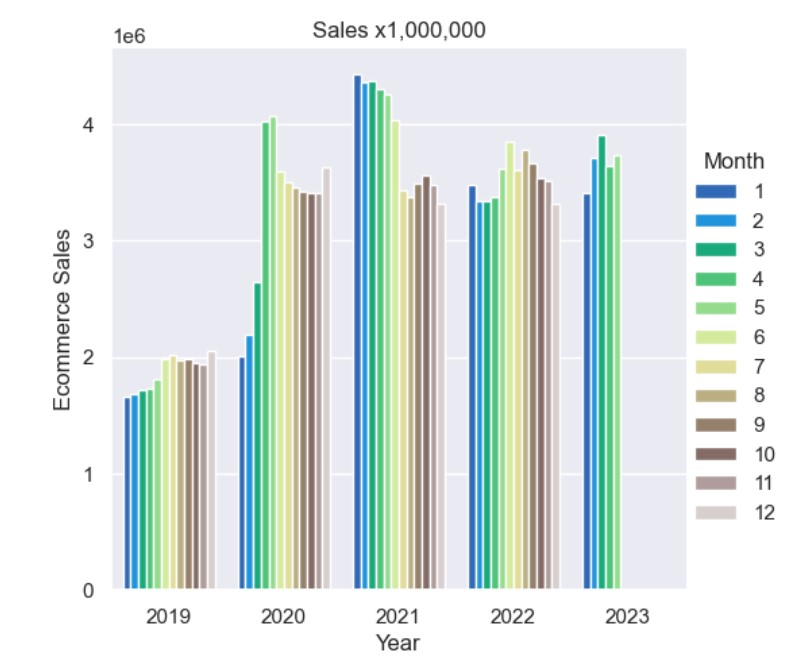
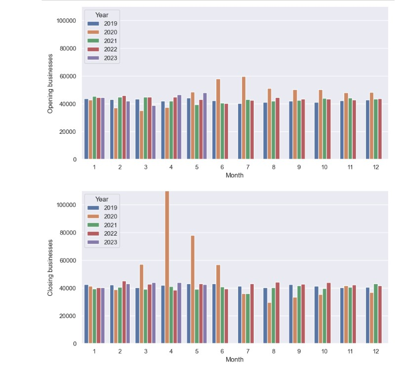

In this analysis, all the data was initially obtained from Statistics Canada.The data was then refined and organized in Microsoft Excel. Data analysis was then carried out using the Pandas library, and visualizations were crafted using Matplotlib and Seaborn."
Click here to visit Stastics Canada

 

As is commonly understood, economic funding is known to be correlated with interest rates as depicted in the figure above we saw a total of 916.8 billion being allocated in different methods in response to the economic impact of COVID-19. The significant investment to bolster the economy led to a substantial increase in interest rates, with an increase of 188.9% between January 2020 up until May 2023.

2019: Throughout 2019, we observed a stable trend, with unemployment rates fluctuating within a relatively narrow range. Unemployment reached its highest point at 6.4% in August, with an average rate of 5.7% for the year.
2020: In 2020, our Business Environment Analysis highlighted a significant increase in business closures between April and June. This resulted in a sharp rise in unemployment, surging by 142.4% from January to May. Unemployment reached a peak of 14.3% in May. As businesses gradually reopened in the subsequent months, we witnessed a steady decline in unemployment, with a 42.7% decrease, bringing the rate down to 8.2% by December.
2021: The implementation of the Economic Response Plan began to make a positive impact on the economy in 2021. Unemployment rates showed a steady decline throughout the year, with some minor fluctuations. The year started with a 9.9% unemployment rate and ended at 5.5%, marking a substantial 44.4% decrease.
2022: Notably, as inflation exhibited a consistent upward trajectory, we observed an inverse relationship with unemployment. Unemployment rates continued to decrease, reaching a remarkable record low of 4.5% between 2019 and 2023, while inflation reached a high of 6.5%.
2023: So far Unemployment has remained stable ranging between 5.2%-5.4%

As evident from the data represented in both the inflation and unemployment graphs. We have noticed a trend of a consistent decrease in unemployment rates coupled with an increase on inflation.
As unemployment rates decline competiton for labor tend to increase in the job market and the employers are then compelled to offer higher wages in their efforts to attract skilled workers.
Simultaneously ,with inflation increasing it tends to decrease the purchasing power of consumers for goods and services. In response to this decrease in real income, wages naturally see an increase to offset the impact of rising prices as depicted in the graph above.

In 2019, the average economic contribution per worker, measured as GDP per worker, stood at $104,066, reflecting the amount each worker added to the economy. In the year 2020 we saw an indication of economic growth witnessing an increase to an average of $104,594.
In 2021 although we had the highest rates of unemployment from 2019 to 2023.The country achieved the highest GDP per woker with an average of $104,690.
However, In 2022 we saw our first decrease to an average of $104,323 despite a tremendous decline in unemployment rates while simultaneously witnessing a major increase in inflation rates.
As of May 2023 GDP per wroker has once again increased to an average of $104,552.
 

To eliminate any potential confusion, the figures displayed on the graphs are as follows: $53,345,000,000 for retail sales and $3,345,000,000 for E-commerce sales.
Retail Sales: In 2019, there were no significant fluctuations in retail sales. Sales remained consistent throughout the year.
In 2020, the retail sales landscape changed. In March, there was a noticeable decline, which was followed by an even more significant drop in April. However, there was a rebound in May. It's important to note that even during a period of relatively high unemployment from May to December, inflation rates remained low. This indicated that consumers had strong purchasing power.
Following the May 2020 increase, the retail market gradually corrected itself, and sales continued to rise steadily throughout the rest of the year, extending into May 2023. Despite high inflation rates during this period, unemployment remained low, and wages and salaries were relatively high. The economic response plan and a robust job market helped mitigate the impact of inflation.
E-commerce: The COVID-19 pandemic, declared in March 2020, had a profound impact on the E-commerce sector. Business closures led to a remarkable 145.7% surge in E-commerce sales from January 2019 to May 2020. Since this surge, the E-commerce market has undergone a transformation.
Consumers have embraced online shopping as a preferred method, and we can observe changing patterns that suggest the E-commerce market is poised for continued growth and strength.

2019:With no notable deviations from the norm. The average rate of opening a business was 42,385, ranging from a minimum of 40,230 to a maximum of 44,431. Conversely, the rates for closing down a business averaged 41,690, with a low of 40,255 and a high of 43,241.
2020:As of March 11th, COVID-19 was declared a pandemic. During that month, the rate of closed-down businesses decreased significantly, showing a decline of 47.18% compared to the previous month. In contrast, the rate of newly opened businesses saw a more modest decline, with a decrease of only 5.84%.
The following month as depicted in the graph, we see a remarkable surge in the rate of closed businesses with a whopping increase of 92.4% from the prior month. Compared to a modest rise of 6.86% in newly opened businesses.
By the month of June, the market began a correction phase, characterized by an increase in the number of newly opened businesses compared to closed ones. This correction trend continued throughout the remainder of the year.
01/2021-05/2023:In the year 2020, no significant deviations from the norm were observed. However, in the year 2021, the average number of newly opened businesses was 43,090. In 2022, this average increased to 43,731, and by mid-2023, it reached an average of 44,079. In contrast, the average number of closed businesses in 2021 was 40,170, which rose to 43,731 in 2022, and by mid-2023, it averaged 42,370.